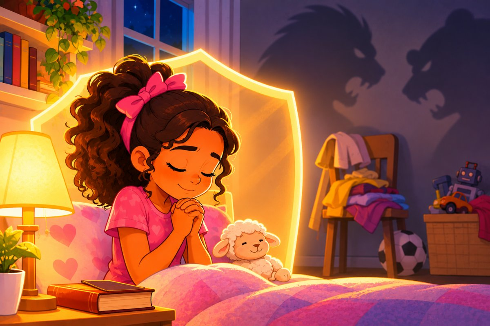
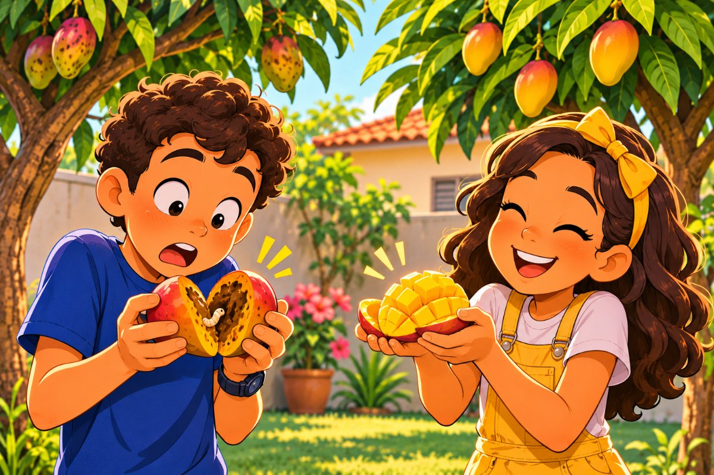

Deus mandou o profeta Samuel a Belém, à casa de Jessé, para ungir o novo rei de Israel. Ungir era derramar azeite na cabeça de alguém: o sinal de que Deus tinha escolhido aquela pessoa. Samuel foi com medo, porque o rei Saul ainda estava no trono e podia matá-lo (16.2).
Entrou Eliabe, o filho mais velho: alto, forte, cara de campeão. Samuel pensou: “É esse!” Mas Deus disse:
“O Senhor não vê como o homem: o homem vê a aparência, mas o Senhor vê o coração.”1 Samuel 16.7, NVI
Passaram sete filhos. Sete “nãos”. “Não tem mais ninguém?” “Só o caçula, que está cuidando das ovelhas.” Ninguém tinha lembrado de chamar o Davi. Ele chegou do pasto, e Deus disse: “É ele.”
Na vida real
Olhe a imagem. Os capitães olharam o menino do canto e viram “o mais fraquinho”. A menina está vendo outra coisa. Deus enxerga como ela, só que muito melhor: ele vê o coração.
E ele vê o seu também, inclusive a raiva escondida atrás da cara de anjo. Isso pode assustar. Mas lembre quem Deus escolheu: o menino que ninguém chamou.
A Bíblia diz que Davi também era bonito (16.12). Então o problema não era a beleza. O que Deus estava medindo?
Ele não é contra a aparência, só não usa ela como régua. Para conhecer o coração de Eliabe, leia 1 Samuel 17.28.
Missão de hoje
Chame para perto alguém que costuma ficar por último.
Oração
Senhor, tu vês o meu coração. Me ensina a olhar as pessoas do jeito que tu olhas. Amém.
Coragem de pastor
1 Samuel 17.32-37 · uns 3 minutos
A história
Fazia 40 dias que o gigante Golias desafiava o exército de Israel, de manhã e de tarde (17.16). Os soldados tremiam. Davi, o caçula, só tinha ido levar comida para os irmãos. Quando se ofereceu para lutar, o rei Saul riu: “Você é só um rapaz.”
Davi explicou. Pastor não tinha espada. Tinha cajado, funda e coragem, porque as ovelhas eram o sustento da família. Quando um leão ou um urso levava uma ovelha, Davi ia atrás e a tirava da boca do bicho (17.34-35). E concluiu:
“O Senhor, que me livrou das garras do leão e das garras do urso, me livrará das mãos desse filisteu.”1 Samuel 17.37, NVI
Repare de onde veio a coragem: Davi lembrou o que Deus já tinha feito.
Na vida real

Hoje os nossos leões são outros: a prova, o médico, a briga em casa, o escuro. Olhe a imagem: as sombras parecem enormes, e a menina não fingiu que não estava com medo. Ela levou o medo para Deus. Repare no escudo de luz em volta dela: as sombras continuam na parede, mas não chegam até ela. O Salmo 91.4 diz que a fidelidade de Deus é escudo.
Qual é a diferença entre ser corajoso e não sentir medo?
Davi provavelmente sentiu o coração disparar diante do leão. Coragem é ir mesmo assim, confiando em quem está com você.
Missão de hoje
Lembre uma vez em que Deus te ajudou. Conte para alguém da sua casa.
Oração
Senhor, tu já me ajudaste antes. Quando eu tiver medo, me lembra disso. Amém.
A ovelha que sumiu
Lucas 15.1-7 · uns 3 minutos
A história
Cobradores de impostos trabalhavam para Roma e muitas vezes cobravam a mais. O povo os via como traidores. Mesmo assim, eles vinham ouvir Jesus. Os fariseus reclamaram: “Este homem recebe pecadores e come com eles” (15.2). Naquele tempo, comer junto era sinal de amizade.
Então Jesus contou uma história. Um pastor tinha cem ovelhas e uma se perdeu. Ovelha perdida não sabe voltar sozinha: fica parada, balindo. O pastor deixou as outras 99 e foi atrás até encontrar. Colocou a ovelha nos ombros, voltou para casa e chamou os amigos para comemorar.
“Haverá mais alegria no céu por um pecador que se arrepende do que por noventa e nove justos que não precisam arrepender-se.”Lucas 15.7, NVI
Na vida real
Você já se perdeu num mercado? Olhe a imagem: quem procurou quem? O pai não ficou esperando o filho achar o caminho. E quando encontrou, não começou com bronca. Começou com abraço. É assim que Jesus trata quem estava longe.
Jesus contou essa história para os pecadores ou para os fariseus que reclamavam? Faz diferença?
Releia o versículo 2. Os fariseus se achavam as 99 ovelhas certinhas. Será que eles se alegrariam com a festa?
Missão de hoje
Pense em alguém que parece “de fora” na sua turma. Faça uma coisa para essa pessoa se sentir encontrada.
Oração
Jesus, obrigado porque tu vens atrás de mim quando eu me perco. Amém.
Eu conheço essa voz
João 10.1-5, 27 · uns 3 minutos
A história
À noite, os pastores de Israel guardavam as ovelhas num cercado de pedras chamado aprisco. Às vezes, rebanhos de donos diferentes dormiam juntos. De manhã, cada pastor chamava as suas, e só as dele saíam. O pastor não empurrava o rebanho por trás: ia na frente, e as ovelhas seguiam.
Jesus usou essa cena para falar de quem é dele. As ovelhas nunca seguem um estranho: fogem dele, porque não conhecem a voz de estranhos (10.5).
“As minhas ovelhas ouvem a minha voz; eu as conheço, e elas me seguem.”João 10.27, NVI
Na vida real
Na saída da escola tem cem vozes gritando. Mesmo assim, você reconhece a da sua mãe na hora. Por quê? Porque passou muito tempo com ela. Com Jesus é igual: hoje a gente ouve a voz dele principalmente pela Bíblia. Quanto mais você lê o que ele disse, mais fácil fica reconhecer.
Quando duas pessoas dão conselhos diferentes, como saber qual combina com Jesus?
Pergunte: isso parece com o jeito que Jesus falava e agia? Se você não sabe, é sinal de que precisa conhecer melhor a voz dele.
Missão de hoje
Leia Mateus 5.3-9 e escolha a frase que mais “soa como Jesus” para você.
Oração
Jesus, eu quero conhecer a tua voz tão bem quanto conheço a voz de casa. Amém.
Fantasia de ovelha
Mateus 7.15-20 · uns 3 minutos
A história
Quase no fim do Sermão do Monte, Jesus deu um aviso: cuidado com os falsos profetas. Eles chegam vestidos de ovelha, mas por dentro são lobos. Naquele tempo, alguns profetas usavam uma capa de pelos como uniforme. Até gente mentirosa vestia a capa para parecer profeta (Zacarias 13.4).
Como descobrir quem é quem? Jesus responde com uma árvore. Ninguém colhe uva de espinheiro.
“Vocês os reconhecerão por seus frutos.”Mateus 7.16, NVI
Atenção: Jesus falava de quem ensina errado sobre Deus. Não é para sair desconfiando de todo mundo nem julgar alguém por um erro só. Fruto aparece com o tempo.
Na vida real

Olhe a imagem. A manga mais bonita por fora era a que estava estragada por dentro, e a simples estava doce. Só abrindo dá para saber. Com gente é parecido: palavras bonitas são a casca; o jeito de tratar os outros, dia após dia, é o que tem dentro.
Se alguém fala coisas lindas sobre Deus, mas vive maltratando os outros, o que vale mais? E se esse alguém for eu?
Jesus não mandou olhar só os frutos dos outros. A pergunta mais difícil é sobre a nossa árvore.
Missão de hoje
À noite, pense: que tipo de fruto as minhas palavras deram hoje?
Oração
Senhor, não quero só parecer ovelha. Faz crescer em mim fruto bom de verdade. Amém.
De perseguidor a seguidor
Atos 9.1-20 · uns 3 minutos
A história
Saulo odiava os seguidores de Jesus. Pegou cartas do sumo sacerdote que o autorizavam a prender cristãos em Damasco, uma viagem de vários dias a pé. No caminho, uma luz do céu o derrubou, e uma voz perguntou: “Saulo, Saulo, por que você me persegue?” (9.4). Era Jesus. Saulo ficou cego por três dias.
Então Deus mandou um cristão chamado Ananias ir orar por ele. Ananias tremeu: “Senhor, tenho ouvido muita coisa a respeito desse homem” (9.13). Deus respondeu:
“Vá! Este homem é meu instrumento escolhido.”Atos 9.15, NVI
Ananias foi. E a primeira palavra que disse ao antigo inimigo foi: “Irmão Saulo” (9.17).
Na vida real
Olhe a imagem. Aquele colega que vivia implicando veio pedir desculpas. Dar uma chance não é fingir que nada aconteceu: Ananias sabia de tudo. Mas ele acreditou que Jesus muda corações. E repare na professora ao fundo: se alguém te machuca de verdade, conte para um adulto. Perdoar não é ficar sozinho com o perigo.
Se você fosse Ananias, o que seria mais difícil: obedecer ou acreditar que Saulo podia mudar?
E pense: tem algo em você que só Jesus consegue mudar? Saulo não mudou por esforço. Mudou porque encontrou Jesus.
Missão de hoje
Dê uma nova chance a alguém com quem você estava de mal.
Oração
Jesus, tu mudaste o Saulo. Muda também o que está errado em mim. Amém.
O Bom Pastor
João 10.11-15 e Salmo 23.1 · uns 3 minutos
A história
Davi, o menino pastor, escreveu: “O Senhor é o meu pastor; de nada terei falta” (Salmo 23.1). Mil anos depois, Jesus disse algo que deixou todo mundo espantado:
“Eu sou o bom pastor. O bom pastor dá a sua vida pelas ovelhas.”João 10.11, NVI
Jesus comparou dois tipos de pastor. O empregado cuidava das ovelhas por salário. Quando via o lobo, fugia, porque as ovelhas não eram dele. O dono ficava. Jesus foi além: deu a vida na cruz pelas ovelhas e depois a recebeu de volta, ressuscitando (10.17-18).
Na vida real
Olhe a imagem. O menino dorme em paz. Lá fora, as ovelhas também descansam, e tem uma luz acesa no meio delas: alguém está acordado cuidando. A Bíblia diz que o Senhor que nos protege não cochila nem dorme (Salmo 121.4).
Depois de sete dias, guarde isto: você não precisa ser uma ovelha perfeita para ser amado pelo Pastor. É porque ele já te ama que você pode confiar nele e segui-lo.
O que muda quando alguém cuida de você por obrigação ou por amor?
Pense no empregado e no dono. O que cada um faz quando aparece o lobo?
Missão de hoje
Decore o Salmo 23.1 e repita antes de dormir.
Oração
Jesus, tu és o meu Bom Pastor. Obrigado por dar a tua vida por mim. Eu quero te seguir. Amém.
Para pais e professores
Série de 7 dias, cerca de 3 minutos de leitura por dia para uma criança de 10 anos. Lida junto, com as perguntas, rende uns 10 minutos.
As perguntas não têm resposta pronta. Se a criança responder algo diferente do esperado, peça que mostre no texto de onde tirou.
Dia 5: o aviso de Mateus 7.15 é sobre falsos profetas. Aplicar a imagem aos frutos de cada um é uma extensão, e a série evita ensinar a criança a rotular pessoas.
Dia 6: a Bíblia não chama Saulo de lobo. O ponto é a transformação. A nota sobre contar a um adulto protege a criança de entender “perdoar” como “ficar exposta”.
1 Samuel 16.10-11 sugere oito filhos de Jessé; 1 Crônicas 2.13-15 lista sete. Uma explicação comum é que um morreu cedo.
Os desenhos “de caderno” ilustram o ensino bíblico do dia; as imagens coloridas, geradas com o ChatGPT, ilustram a aplicação. Plano e contexto da série foram conferidos com ele e revisados por nós.